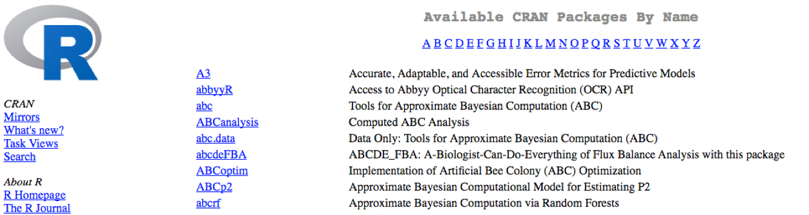

9 Packages and Libraries
Packages are collections of R functions, data, and compiled code in a well-defined format, created to add specific functionality. There are 10,000+ user contributed packages and growing.
There are a set of standard (or base) packages which are considered part of the R source code and automatically available as part of your R installation. Base packages contain the basic functions that allow R to work, and enable standard statistical and graphical functions on datasets; for example, all of the functions that we have been using so far in our examples.
The directories in R where the packages are stored are called the libraries. The terms package and library are sometimes used synonymously and there has been discussion amongst the community to resolve this. It is somewhat counter-intuitive to load a package using the library() function and so you can see how confusion can arise.
You can check what libraries are loaded in your current R session by typing into the console:
sessionInfo() #Print version information about R, the OS and attached or loaded packages
# OR
search() #Gives a list of attached packagesPreviously we have introduced you to functions from the standard base packages. However, the more you work with R, you will come to realize that there is a cornucopia of R packages that offer a wide variety of functionality. To use additional packages will require installation. Many packages can be installed from the CRAN or Bioconductor repositories.
9.0.1 Helpful tips for package installations
- Package names are case sensitive!
- At any point (especially if you’ve used R/Bioconductor in the past), in the console R may ask you if you want to “update any old packages by asking Update all/some/none? [a/s/n]:”. If you see this, type “a” at the prompt and hit Enter to update any old packages. Updating packages can sometimes take awhile to run. If you are short on time, you can choose “n” and proceed. Without updating, you run the risk of conflicts between your old packages and the ones from your updated R version later down the road.
- If you see a message in your console along the lines of “binary version available but the source version is later”, followed by a question, “Do you want to install from sources the package which needs compilation? y/n”, type n for no, and hit enter.
9.0.2 Package installation from CRAN
CRAN is a repository where the latest downloads of R (and legacy versions) are found in addition to source code for thousands of different user contributed R packages.

Packages for R can be installed from the CRAN package repository using the install.packages function. This function will download the source code from on the CRAN mirrors and install the package (and any dependencies) locally on your computer.
An example is given below for the ggplot2 package that will be required for some plots we will create later on. Run this code to install ggplot2.
install.packages("ggplot2")9.0.3 Package installation from Bioconductor
Alternatively, packages can also be installed from Bioconductor, another repository of packages which provides tools for the analysis and comprehension of high-throughput genomic data. These packages includes (but is not limited to) tools for performing statistical analysis, annotation packages, and accessing public datasets.

There are many packages that are available in CRAN and Bioconductor, but there are also packages that are specific to one repository. Generally, you can find out this information with a Google search or by trial and error.
To install from Bioconductor, you will first need to install BiocManager. This only needs to be done once ever for your R installation.
# DO NOT RUN THIS!
install.packages("BiocManager")Now you can use the install() function from the BiocManager package to install a package by providing the name in quotations.
Here we have the code to install ggplot2, through Bioconductor:
# DO NOT RUN THIS!
BiocManager::install("ggplot2")The code above may not be familiar to you - it is essentially using a new operator, a double colon
::to execute a function from a particular package. This is the syntax:package::function_name().
9.0.4 Package installation from source
Finally, R packages can also be installed from source. This is useful when you do not have an internet connection (and have the source files locally), since the other two methods are retrieving the source files from remote sites.
To install from source, we use the same install.packages function but we have additional arguments that provide specifications to change from defaults:
# DO NOT RUN THIS!
install.packages("~/Downloads/ggplot2_1.0.1.tar.gz", type="source", repos=NULL)9.0.5 Loading libraries
Once you have the package installed, you can load the library into your R session for use. Any of the functions that are specific to that package will be available for you to use by simply calling the function as you would for any of the base functions. Note that quotations are not required here.
library(ggplot2)You can also check what is loaded in your current environment by using sessionInfo() or search() and you should see your package listed as:
other attached packages:
[1] ggplot2_2.0.0In this case there are several other packages that were also loaded along with ggplot2.
We only need to install a package once on our computer. However, to use the package, we need to load the library every time we start a new R/RStudio environment. You can think of this as installing a bulb versus turning on the light.

Analogy and image credit to Dianne Cook of Monash University.
9.0.6 Finding functions specific to a package
This is your first time using ggplot2, how do you know where to start and what functions are available to you? One way to do this, is by using the Package tab in RStudio. If you click on the tab, you will see listed all packages that you have installed. For those libraries that you have loaded, you will see a blue checkmark in the box next to it. Scroll down to ggplot2 in your list:

If your library is successfully loaded you will see the box checked, as in the screenshot above. Now, if you click on ggplot2 RStudio will open up the help pages and you can scroll through.
An alternative is to find the help manual online, which can be less technical and sometimes easier to follow. For example, this website is much more comprehensive for ggplot2 and is the result of a Google search. Many of the Bioconductor packages also have very helpful vignettes that include comprehensive tutorials with mock data that you can work with.
If you can’t find what you are looking for, you can use the rdocumention.org website that search through the help files across all packages available.
The materials in this lesson have been adapted from work created by the (HBC)](http://bioinformatics.sph.harvard.edu/) and Data Carpentry (http://datacarpentry.org/). These are open access materials distributed under the terms of the Creative Commons Attribution license (CC BY 4.0), which permits unrestricted use, distribution, and reproduction in any medium, provided the original author and source are credited.